Dec 01,2022
Xfce 4.18 released
Xfce 4.16.0 got released almost two years ago. Meanwhile alot of major development happened for Xfce. Our team added a lot of nice new features and did a gazillion of bugfixes and minor improvements. Finally all that is going to be released for your pleasure.
So assuming you have installed Xfce 4.16, here an overview on the new features you will see on an upgrade to Xfce 4.18. For the sake of readibility, this list only shows main highlights. Check the component specific changelog for a complete, detailed list of bugfixes, internal changes, translation updates etc.
libxfce4ui
XfceFilenameInput
A confortable widget for filename input was added in order to prevent invalid filenames early and give visual feedback.
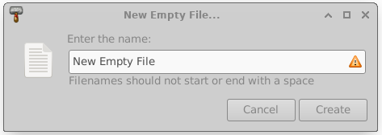
XfceShortcutsEditor
A shortcut editor widget was introduce in order to have a graphical interface to modify shortcuts. Currently it is used in Thunar and xfce4-terminal.

tumbler
Some performance improvements for the pixbuf-thumbnailer and the scheduler were done. As well now there are multiple overwrite options for the desktop-thumbnailer.
There is now supports for the thumbnail sizes x-large and xx-large, which are useful for high resolution displays
Tumbler and Thunar now support shared thumbnail repositories, like described in the freedesktop.org thumbnail specification. This feature can be used to produce thumbnails for a folder in advance, directly attached to the pictures. Like that the thumbnails dont need to be re-generated for each individual user.
For more information on shared tumbnails as well check the related blog post.
xfce4-panel
The DateTime and the Clock plugin provided overlapping functionallity. In order to prevent parallel development, they have been merged into a single plugin.
The new Clock plugin as well has a binary time mode now and and provides a sleep monitor.
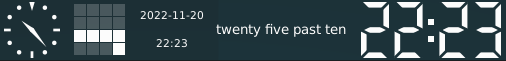xfdesktop
Like in thunar, the "Delete" menu entry in the context menu can now be hidden.
In order to dont mess the desktop by accident on pressing 'rearange desktop icons', the user is asked for confirmation now.
xfce4-settings
The search entry for xfce4-settings-manager was a bit simplified. Now it will be always shwon, without any slider or button.

xfce4-display-settings
xfce4-display-settings got some minor improvements and the possibility to decide what to do when a new display is connected.

xfce4-appearance-settings
xfce4-appearance-settings got some an option to set a matching xfwm4 theme if available.
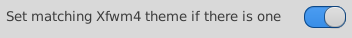thunar
List View
In the List View for directories the file count of directories can now be displayed in the size column
It is now possible to add a "file creation date" column and to sort accoringly
 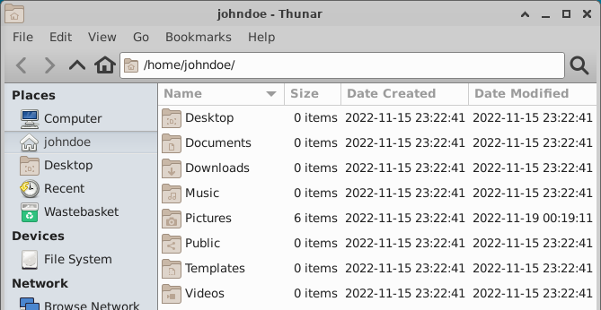
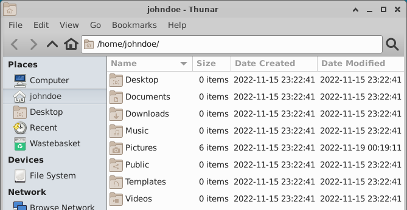
Image Preview
A image preview sidepane has been added .. actually two different sidepanes from which you can choose.


Undo and Redo
It is now possible to undo multiple file operations and to redo them, in case you changed your mind
File Highlight
Files can be highlighted by setting the background and the filename to user-specific custom colors.
 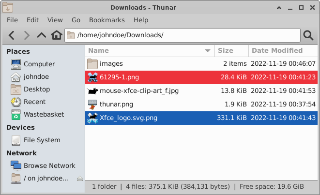
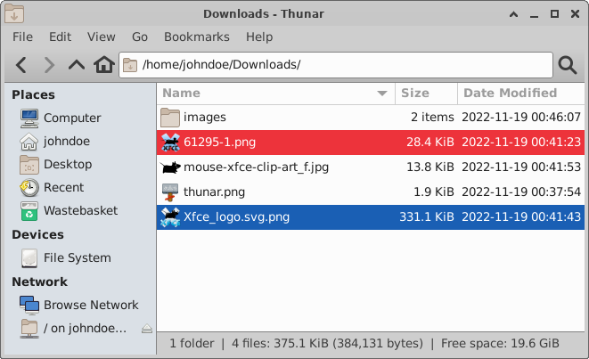
For more information on file highlight as well check the related blog post.
Toolbar
It is now possible to customize the toolbar according to your needs. An additional dialog has been added for that purpose.


For more information on the configurable toolbar as well check the related blog post.
In order to keep a possibility to get the menubar back when it was removed by accident, a toolbar button has to be added which is only visible when the menubar is gone SCREENSHOT

Split View
Thunar now provides the option to use horizontal/vertical split panes.

Statusbar
It is now possibility to customize the statusbar.
Recursive Search
Thunar has now the possibility to search recursively dircetly inside Thunar itself.
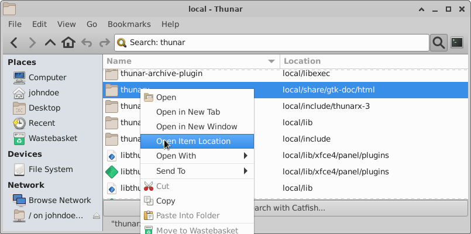 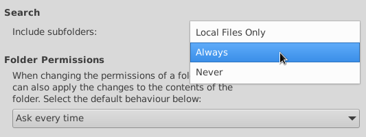For more information on the recursive search feature as well check the related blog post.
Recent
Recently used files can now be used in Thunar.
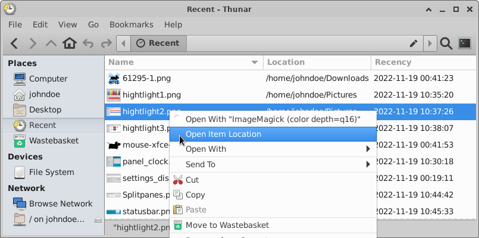For more information on 'recent' in Thunar as well check the related blog post.
Bookmark Menu
Bookmarks have been moved into a separate Bookmarks menu.

Trash directory
The trash directory now provides an infobar which gives easy access to `Empty Trash` and 'Restore' functionallity.
Add 'date deleted' column for the trash directory.

Default Applications
The management to set/unset default applications for specific mime types was improved context menu and dialog.


Custom Actions
It is now possible to arrange custom actions in cascading submenus.


Preferences
The thumbnail settings in the preferences dialog got grouped together, and some new options are available.

File transfer operations optionally can use *.partial~ as an intermediate file now. And after a copy copy/move operations there is now the option to verify the file checksums in order to make sure that no single bit got corrupted.

For more information on the new file transfer options as well check the related blog post.
A checkbox was added in order to allow running shell scripts.

There is now the possibility to restore tabs on startup, and to showthe full directory path in the tab title

xfwm4
Workspaces
Workspace setting will now work as well with other window managers
Compositor
The compositor now supports adaptive vsync with GLX
General
Scaling
Improved support for UI scaling and fixage for most blurry icons in the core components. This will be particulary usefull for HiDPI screens.
Window Header Bars
All header bars of Xfce Windows/Dialogs by default will be drawn by the window manager now (Xfwm4). Some dialogs optionally support GtkHeaderBar (CSD) which can be enabled via an xfconf setting.
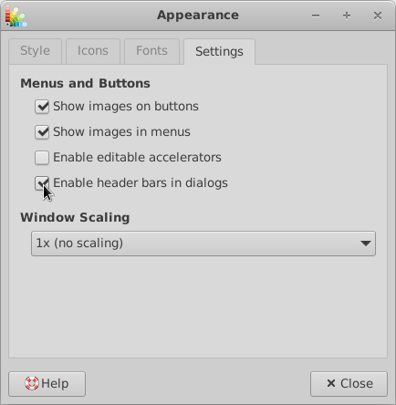TODOs
- Write more text, check grammar
- fork project to gitlab.xfce
- Write Email to core devs, and as well link into IRC - Please provide Merge requests - Going to be used for Xfce4.18 Tour
Phew, that was alot of stuff. Note that I only showed new features here. Of course as well tons of bugfixes made it into 4.18.0 (full changelog) ! Like always after a mayjor release I am pretty sure Xfce folks out there will find various more things to improve regarding the new features.
I hope we did not introduce any regression .. if you spot one, please dont hestitate to report it on our isssue tracker.[link to wiki .. how to report a bug]
page sources | © 2022 Alexander Schwinn